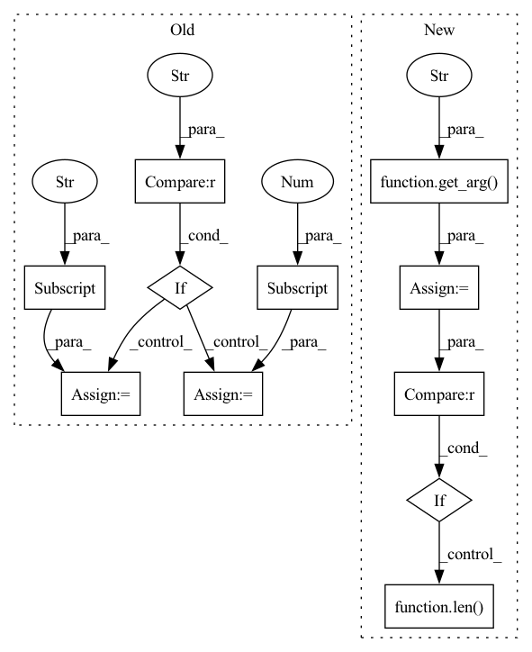

Pattern ID :24662
Before Change
inputs = ctx.method_args[0]
if "dim" in ctx.method_kwargs :
dim = ctx.method_kwargs["dim"]
else:
dim = ctx.method_args[1]
output = ctx.method_return
trt_inputs = [trt_(ctx.network, i) for i in inputs]
After Change
inputs = ctx.method_args[0]
dim = get_arg( ctx, "dim" , pos=1, default=0)
if dim<0 :
dim = len( inputs[0].shape) +dim
output = ctx.method_return
trt_inputs = [trt_(ctx.network, i) for i in inputs]In pattern: SUPERPATTERN
Frequency: 3
Non-data size: 11
Instances Fragment ID: 76488606
Project Name: grimoire/torch2trt_dynamic
Commit Name: 417ed2568eb765d3676c238f1b5c168839c26ec5
Time: 2020-04-21
Author: streetyao@live.com
File Name: torch2trt/converters/cat.py
M Class Name: AnonimousClass
N Class Name: AnonimousClass
M Method Name: convert_cat(1)
N Method Name: convert_cat(1)
M Parent Class:
N Parent Class:
M File Name: torch2trt/converters/cat.py
N File Name: torch2trt/converters/cat.py
M Start Line: 12
M End Line: 17
N Start Line: 10
N End Line: 16
Before Change
output = ctx.method_return
// get dims from args or kwargs
if "dim" in ctx.method_kwargs :
dim = ctx.method_kwargs["dim"]
elif len(ctx.method_args) >= 2:
dim = ctx.method_args[1]
// convert list to tuple
if isinstance(dim, list):
dim = tuple(dim)After Change
input = ctx.method_args[0]
input_trt = trt_(ctx.network, input)
output = ctx.method_return
dim = get_arg( ctx, "dim" , pos=1, default=None)
keep_dims = get_arg(ctx, "keepdim", pos=2, default=False)
// get dims from args or kwargs
if dim is None :
dim = tuple(range(len( input.shape) ))
// convert list to tuple
if isinstance(dim, list): Fragment ID: 76488603
Project Name: grimoire/torch2trt_dynamic
Commit Name: 11d2ef919763c792d1389016c4f2f4792fb47a0e
Time: 2020-07-27
Author: streetyao@live.com
File Name: torch2trt/converters/mean.py
M Class Name: AnonimousClass
N Class Name: AnonimousClass
M Method Name: convert_mean(1)
N Method Name: convert_mean(1)
M Parent Class:
N Parent Class:
M File Name: torch2trt/converters/mean.py
N File Name: torch2trt/converters/mean.py
M Start Line: 13
M End Line: 38
N Start Line: 8
N End Line: 25
Before Change
output = ctx.method_return
// get dims from args or kwargs
if "dim" in ctx.method_kwargs :
dim = ctx.method_kwargs["dim"]
elif len(ctx.method_args) >= 2:
dim = ctx.method_args[1]
// axes = 1 << (dim - 1)
if not support_dynamic_shape:
dim -= 1After Change
output = ctx.method_return
// get dims from args or kwargs
dim = get_arg( ctx, "dim" , pos=1, default=None)
if dim is None:
dim = -1
if dim<0 :
dim = len( input.shape) +dim
// axes = 1 << (dim - 1)
if not support_dynamic_shape: Fragment ID: 76488595
Project Name: grimoire/torch2trt_dynamic
Commit Name: 8fb71f779dd81f951e70cb82520f827e83ef6be5
Time: 2020-04-21
Author: streetyao@live.com
File Name: torch2trt/converters/softmax.py
M Class Name: AnonimousClass
N Class Name: AnonimousClass
M Method Name: convert_softmax(1)
N Method Name: convert_softmax(1)
M Parent Class:
N Parent Class:
M File Name: torch2trt/converters/softmax.py
N File Name: torch2trt/converters/softmax.py
M Start Line: 17
M End Line: 23
N Start Line: 12
N End Line: 24